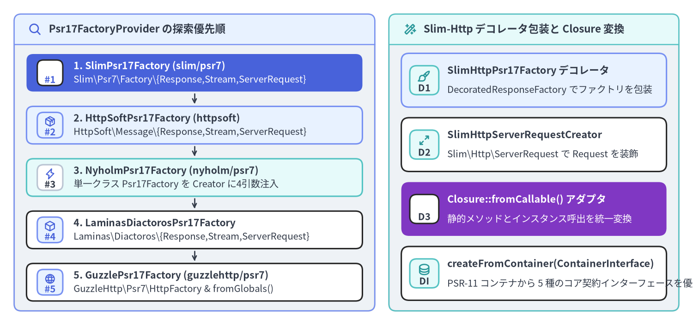
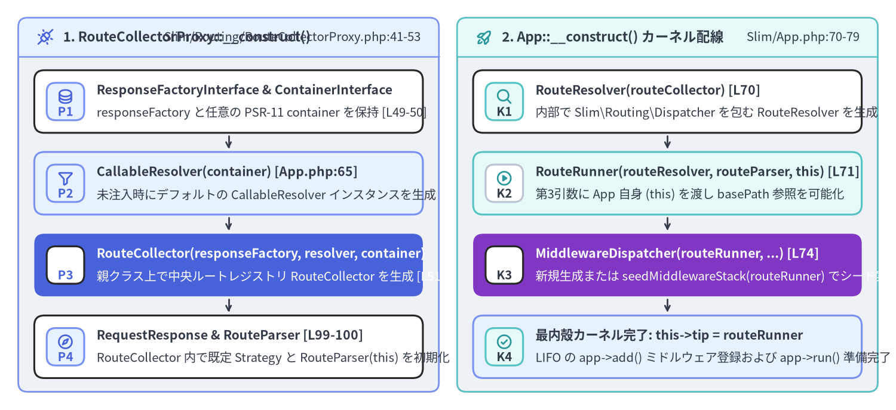

AppFactory・PSR-17 自動検出・カーネル初期化の内部実装
Slim 4 は、ルーティングおよびミドルウェアの中核カーネルを特定の PSR-7 HTTP メッセージ実装から完全に分離しています。コード内で new Slim\Psr7\Response() のように具象クラスをハードコードする代わりに、Slim\Factory\AppFactory（Slim/Factory/AppFactory.php）、Slim\Factory\ServerRequestCreatorFactory（Slim/Factory/ServerRequestCreatorFactory.php）、および Slim\Factory\Psr17\*（全 10 クラス）がゼロ設定のブートストラップ層を提供し、インストール済みの Composer パッケージを起動時に自動検出して Slim\App のデフォルトオブジェクトグラフを組み立てます。

Source Code
from drawlib.canvas import save, setup
from drawlib.icons import phosphor
from drawlib.smartarts import CardList, Panel
from drawlib.styles import Colors, Styles
setup(width=196, height=92, dpi=150)
# Left Panel: Psr17FactoryProvider Ordered Probe Queue
p_left = Panel(
"Psr17FactoryProvider の探索優先順",
"",
style=Styles.Neutral.patch(shape_r=2.0),
header_style=Styles.PrimaryNeutral.patch(shape_line_width=1.2),
text_style=Styles.DarkBold.patch(text_size=10.8),
icon=phosphor.magnifying_glass,
icon_style=Styles.PrimaryBold,
header_variant="filled",
header_height=8.5,
)
p_left.draw((4.0, 4.0), width=102.0, height=84.0)
lx, lw, lh = p_left.get_content_box((4.0, 4.0), width=102.0, height=84.0, padding=(3.5, 2.8))
providers = CardList(
style=Styles.White,
text_style=Styles.DarkBold.patch(text_size=10.2),
description_style=Styles.Dark.patch(text_size=9.8),
badge_shape="rounded_rect",
badge_style=Styles.PrimaryNeutral,
badge_text_style=Styles.PrimaryBold.patch(text_size=9.8),
icon_style=Styles.PrimaryBold,
direction="vertical",
spacing=2.4,
show_arrows=True,
arrow_style=Styles.DarkBold.patch(line_arrow_head_scale=10, line_width=1.3),
)
providers.add(
"1. SlimPsr17Factory (slim/psr7)",
"Slim\\Psr7\\Factory\\{Response,Stream,ServerRequest}",
badge_text="#1",
icon=phosphor.star,
style=Styles.PrimaryFlat,
text_style=Styles.WhiteBold.patch(text_size=10.2),
description_style=Styles.White.patch(text_size=9.8),
badge_style=Styles.White,
badge_text_style=Styles.PrimaryBold.patch(text_size=9.8),
icon_style=Styles.WhiteBold,
)
providers.add(
"2. HttpSoftPsr17Factory (httpsoft)",
"HttpSoft\\Message\\{Response,Stream,ServerRequest}",
badge_text="#2",
icon=phosphor.package,
style=Styles.PrimaryNeutral,
)
providers.add(
"3. NyholmPsr17Factory (nyholm/psr7)",
"単一クラス Psr17Factory を Creator に4引数注入",
badge_text="#3",
icon=phosphor.lightning,
style=Styles.SecondaryNeutral,
badge_style=Styles.White.patch(shape_line_color=Colors.Gray4),
badge_text_style=Styles.DarkBold.patch(text_size=9.8),
)
providers.add(
"4. LaminasDiactorosPsr17Factory",
"Laminas\\Diactoros\\{Response,Stream,ServerRequest}",
badge_text="#4",
icon=phosphor.cube,
)
providers.add(
"5. GuzzlePsr17Factory (guzzlehttp/psr7)",
"GuzzleHttp\\Psr7\\HttpFactory & fromGlobals()",
badge_text="#5",
icon=phosphor.globe,
)
providers.draw(xy=lx, width=lw, height=lh)
# Right Panel: Decoration & Closure::fromCallable Bridge
p_right = Panel(
"Slim-Http デコレータ包装と Closure 変換",
"",
style=Styles.Neutral.patch(shape_r=2.0),
header_style=Styles.SecondaryNeutral.patch(shape_line_width=1.2),
text_style=Styles.DarkBold.patch(text_size=10.8),
icon=phosphor.magic_wand,
icon_style=Styles.SecondaryBold,
header_variant="filled",
header_height=8.5,
)
p_right.draw((110.0, 4.0), width=82.0, height=84.0)
rx, rw, rh = p_right.get_content_box((110.0, 4.0), width=82.0, height=84.0, padding=(3.5, 3.0))
dec_list = CardList(
style=Styles.White,
text_style=Styles.DarkBold.patch(text_size=10.4),
description_style=Styles.Dark.patch(text_size=9.8),
badge_shape="rounded_rect",
badge_style=Styles.SecondaryNeutral,
badge_text_style=Styles.DarkBold.patch(text_size=9.8),
icon_style=Styles.SecondaryBold,
direction="vertical",
spacing=3.0,
)
dec_list.add(
"SlimHttpPsr17Factory デコレータ",
"DecoratedResponseFactory でファクトリを包装",
badge_text="D1",
icon=phosphor.paint_brush,
style=Styles.PrimaryNeutral,
)
dec_list.add(
"SlimHttpServerRequestCreator",
"Slim\\Http\\ServerRequest で Request を装飾",
badge_text="D2",
icon=phosphor.arrows_out_simple,
)
dec_list.add(
"Closure::fromCallable() アダプタ",
"静的メソッドとインスタンス呼出を統一変換",
badge_text="D3",
icon=phosphor.brackets_curly,
style=Styles.AccentFlat,
text_style=Styles.WhiteBold.patch(text_size=10.4),
description_style=Styles.White.patch(text_size=9.8),
badge_style=Styles.White,
badge_text_style=Styles.DarkBold.patch(text_size=9.8),
icon_style=Styles.WhiteBold,
)
dec_list.add(
"createFromContainer(ContainerInterface)",
"PSR-11 コンテナから 5 種のコア契約インターフェースを優先解決",
badge_text="DI",
icon=phosphor.database,
)
dec_list.draw(xy=rx, width=rw, height=lh)
save()
1. AppFactory::create() と AppFactory::createFromContainer() の比較
Slim\Factory\AppFactory（Slim/Factory/AppFactory.php:28-217）は 9 個の protected static プロパティ（$psr17FactoryProvider、$responseFactory、$streamFactory、$container、$callableResolver、$routeCollector、$routeResolver、$middlewareDispatcher、$slimHttpDecoratorsAutomaticDetectionEnabled = true）を保持しており、AppFactory::create(...) の引数として直接注入する方法と、事前に AppFactory::setContainer(...) 等の静的セッターで設定してから AppFactory::create() を呼ぶ方法の両方をサポートしています。
直接生成パターン（Slim/Factory/AppFactory.php:53-70）
public static function create(
?ResponseFactoryInterface $responseFactory = null,
?ContainerInterface $container = null,
?CallableResolverInterface $callableResolver = null,
?RouteCollectorInterface $routeCollector = null,
?RouteResolverInterface $routeResolver = null,
?MiddlewareDispatcherInterface $middlewareDispatcher = null
): App {
static::$responseFactory = $responseFactory ?? static::$responseFactory;
return new App(
self::determineResponseFactory(),
$container ?? static::$container,
$callableResolver ?? static::$callableResolver,
$routeCollector ?? static::$routeCollector,
$routeResolver ?? static::$routeResolver,
$middlewareDispatcher ?? static::$middlewareDispatcher
);
}
PSR-11 コンテナ駆動生成パターン（Slim/Factory/AppFactory.php:77-122）
AppFactory::createFromContainer(ContainerInterface $container) を呼び出すと、以下の 5 つのコア契約インターフェースについて $container->has(...) と instanceof 型検査を順番に実行します。
ResponseFactoryInterface::class（79〜84 行目）：コンテナに未登録の場合はself::determineResponseFactory()による自動検出へフォールバックします。CallableResolverInterface::class（86〜91 行目）：未登録時はnullを渡し、App::__construct()内でnew CallableResolver($container)を生成させます。RouteCollectorInterface::class（93〜98 行目）：未登録時はnullを渡します。RouteResolverInterface::class（100〜105 行目）：未登録時はnullを渡します。MiddlewareDispatcherInterface::class（107〜112 行目）：未登録時はnullを渡します。
2. PSR-17 候補プロバイダの自動検出と Slim\Http デコレータ包装
Psr17FactoryProvider::$factories の探索順序（Slim/Factory/Psr17/Psr17FactoryProvider.php:22-28）
AppFactory::determineResponseFactory()（Slim/Factory/AppFactory.php:127-157）は、static::$responseFactory が未設定の場合に Psr17FactoryProvider::getFactories() を順番にループし、class_exists() に基づく $psr17factory::isResponseFactoryAvailable()（Slim/Factory/Psr17/Psr17Factory.php:77-80）が最初に true を返したプロバイダを採用します。なお、Psr17FactoryProvider::addFactory()（51 行目）は array_unshift() で配列先頭に挿入するため、独自プロバイダを最優先（インデックス 0）で登録できます。
| 優先順 | アダプタクラス（Slim\Factory\Psr17\*） |
$responseFactoryClass |
$streamFactoryClass |
$serverRequestCreatorClass & $serverRequestCreatorMethod |
|---|---|---|---|---|
#1 |
SlimPsr17Factory |
Slim\Psr7\Factory\ResponseFactory |
Slim\Psr7\Factory\StreamFactory |
Slim\Psr7\Factory\ServerRequestFactory :: createFromGlobals（静的） |
#2 |
HttpSoftPsr17Factory |
HttpSoft\Message\ResponseFactory |
HttpSoft\Message\StreamFactory |
HttpSoft\ServerRequest\ServerRequestCreator :: createFromGlobals（静的） |
#3 |
NyholmPsr17Factory |
Nyholm\Psr7\Factory\Psr17Factory |
Nyholm\Psr7\Factory\Psr17Factory |
Nyholm\Psr7Server\ServerRequestCreator -> fromGlobals（インスタンス） |
#4 |
LaminasDiactorosPsr17Factory |
Laminas\Diactoros\ResponseFactory |
Laminas\Diactoros\StreamFactory |
Laminas\Diactoros\ServerRequestFactory :: fromGlobals（静的） |
#5 |
GuzzlePsr17Factory |
GuzzleHttp\Psr7\HttpFactory |
GuzzleHttp\Psr7\HttpFactory |
GuzzleHttp\Psr7\ServerRequest :: fromGlobals（静的） |
なぜ NyholmPsr17Factory だけ getServerRequestCreator() をオーバーライドするのか？（Slim/Factory/Psr17/NyholmPsr17Factory.php:19-46）
5つのプロバイダのうち4つは、引数不要の静的メソッド（::createFromGlobals() または ::fromGlobals()）でスーパーグローバルから ServerRequestInterface を生成できます。しかし Nyholm\Psr7Server\ServerRequestCreator はコンストラクタに4つの PSR-17 ファクトリインターフェース（ServerRequestFactoryInterface、UriFactoryInterface、UploadedFileFactoryInterface、StreamFactoryInterface）を要求し、インスタンスメソッド ->fromGlobals() を呼び出す設計になっています。
そこで NyholmPsr17Factory::getServerRequestCreator() は、全 PSR-17 インターフェースを単一クラスで実装している Nyholm\Psr7\Factory\Psr17Factory のインスタンスを1つ生成し、それを4つの引数すべてに渡してインスタンス化しています。
// Slim/Factory/Psr17/NyholmPsr17Factory.php:19-35
public static function getServerRequestCreator(): ServerRequestCreatorInterface
{
$psr17Factory = new static::$responseFactoryClass();
$serverRequestCreator = new static::$serverRequestCreatorClass(
$psr17Factory,
$psr17Factory,
$psr17Factory,
$psr17Factory
);
return new ServerRequestCreator($serverRequestCreator, static::$serverRequestCreatorMethod);
}
さらに Slim\Factory\Psr17\ServerRequestCreator::createServerRequestFromGlobals()（Slim/Factory/Psr17/ServerRequestCreator.php:38-45）が Closure::fromCallable([$this->serverRequestCreator, $this->serverRequestCreatorMethod]) を用いることで、クラス名文字列による静的呼び出しとオブジェクトインスタンスによるメソッド呼び出しを単一の実装で透過的に扱っています。
public function createServerRequestFromGlobals(): ServerRequestInterface
{
/** @var callable $callable */
$callable = [$this->serverRequestCreator, $this->serverRequestCreatorMethod];
/** @var ServerRequestInterface */
return (Closure::fromCallable($callable))();
}
slim/http 導入時の自動デコレータ包装（SlimHttpPsr17Factory と SlimHttpServerRequestCreator）
static::$slimHttpDecoratorsAutomaticDetectionEnabled が true（デフォルト）のとき、Slim はオプションパッケージ slim/http の存在を自動判定します。
- Response ファクトリの装飾（
Slim/Factory/AppFactory.php:159-171&Slim/Factory/Psr17/SlimHttpPsr17Factory.php:17-39）:ResponseFactoryInterfaceとStreamFactoryInterfaceの両方が利用可能であり、かつclass_exists('Slim\Http\Factory\DecoratedResponseFactory')がtrueの場合、SlimHttpPsr17Factory::createDecoratedResponseFactory($responseFactory, $streamFactory)によってラップし、withJson()やwithRedirect()などのヘルパーメソッドを備えたSlim\Http\Responseを生成します。 - ServerRequest 生成器の装飾（
Slim/Factory/ServerRequestCreatorFactory.php:61-72&Slim/Factory/Psr17/SlimHttpServerRequestCreator.php:19-56）:class_exists('Slim\Http\ServerRequest')がtrueの場合、new SlimHttpServerRequestCreator($serverRequestCreator)でラップし、生成されたリクエストをnew Slim\Http\ServerRequest($request)（43 行目）で装飾します。
3. App::__construct() におけるデフォルトオブジェクトグラフの構築
AppFactory が $responseFactory を確定した後、Slim\App::__construct()（Slim/App.php:55-80）と親クラスの Slim\Routing\RouteCollectorProxy::__construct()（Slim/Routing/RouteCollectorProxy.php:41-53）が 7 つのコアオブジェクトを連結し、実行可能な PSR-15 パイプラインを構築します。

Source Code
from drawlib.canvas import save, setup
from drawlib.icons import phosphor
from drawlib.smartarts import CardList, Panel
from drawlib.styles import Colors, Styles
setup(width=196, height=90, dpi=150)
# Left Panel: 1. RouteCollectorProxy::__construct() (Parent Constructor)
p_left = Panel(
"1. RouteCollectorProxy::__construct()",
"Slim/Routing/RouteCollectorProxy.php:41-53",
style=Styles.Neutral.patch(shape_r=2.0),
header_style=Styles.PrimaryNeutral.patch(shape_line_width=1.2),
text_style=Styles.DarkBold.patch(text_size=10.8),
description_style=Styles.Dark.patch(text_size=9.8),
icon=phosphor.plugs_connected,
icon_style=Styles.PrimaryBold,
header_variant="filled",
header_height=8.5,
)
p_left.draw((4.0, 4.0), width=92.0, height=82.0)
lx, lw, lh = p_left.get_content_box((4.0, 4.0), width=92.0, height=82.0, padding=(3.5, 3.0))
proxy_list = CardList(
style=Styles.White,
text_style=Styles.DarkBold.patch(text_size=10.2),
description_style=Styles.Dark.patch(text_size=9.8),
badge_shape="rounded_rect",
badge_style=Styles.PrimaryNeutral,
badge_text_style=Styles.PrimaryBold.patch(text_size=9.8),
icon_style=Styles.PrimaryBold,
direction="vertical",
spacing=2.6,
show_arrows=True,
arrow_style=Styles.DarkBold.patch(line_arrow_head_scale=10, line_width=1.3),
)
proxy_list.add(
"ResponseFactoryInterface & ContainerInterface",
"responseFactory と任意の PSR-11 container を保持 [L49-50]",
badge_text="P1",
icon=phosphor.database,
)
proxy_list.add(
"CallableResolver(container) [App.php:65]",
"未注入時にデフォルトの CallableResolver インスタンスを生成",
badge_text="P2",
icon=phosphor.funnel,
style=Styles.PrimaryNeutral,
)
proxy_list.add(
"RouteCollector(responseFactory, resolver, container)",
"親クラス上で中央ルートレジストリ RouteCollector を生成 [L51]",
badge_text="P3",
icon=phosphor.git_branch,
style=Styles.PrimaryFlat,
text_style=Styles.WhiteBold.patch(text_size=10.2),
description_style=Styles.White.patch(text_size=9.8),
badge_style=Styles.White,
badge_text_style=Styles.PrimaryBold.patch(text_size=9.8),
icon_style=Styles.WhiteBold,
)
proxy_list.add(
"RequestResponse & RouteParser [L99-100]",
"RouteCollector 内で既定 Strategy と RouteParser(this) を初期化",
badge_text="P4",
icon=phosphor.compass,
)
proxy_list.draw(xy=lx, width=lw, height=lh)
# Right Panel: 2. App::__construct() Kernel Wiring (Slim/App.php:70-79)
p_right = Panel(
"2. App::__construct() カーネル配線",
"Slim/App.php:70-79",
style=Styles.Neutral.patch(shape_r=2.0),
header_style=Styles.SecondaryNeutral.patch(shape_line_width=1.2),
text_style=Styles.DarkBold.patch(text_size=10.8),
description_style=Styles.Dark.patch(text_size=9.8),
icon=phosphor.rocket_launch,
icon_style=Styles.SecondaryBold,
header_variant="filled",
header_height=8.5,
)
p_right.draw((100.0, 4.0), width=92.0, height=82.0)
rx, rw, rh = p_right.get_content_box((100.0, 4.0), width=92.0, height=82.0, padding=(3.5, 3.0))
app_list = CardList(
style=Styles.White,
text_style=Styles.DarkBold.patch(text_size=10.2),
description_style=Styles.Dark.patch(text_size=9.8),
badge_shape="rounded_rect",
badge_style=Styles.SecondaryNeutral,
badge_text_style=Styles.DarkBold.patch(text_size=9.8),
icon_style=Styles.SecondaryBold,
direction="vertical",
spacing=2.6,
show_arrows=True,
arrow_style=Styles.DarkBold.patch(line_arrow_head_scale=10, line_width=1.3),
)
app_list.add(
"RouteResolver(routeCollector) [L70]",
"内部で Slim\\Routing\\Dispatcher を包む RouteResolver を生成",
badge_text="K1",
icon=phosphor.magnifying_glass,
)
app_list.add(
"RouteRunner(routeResolver, routeParser, this) [L71]",
"第3引数に App 自身 (this) を渡し basePath 参照を可能化",
badge_text="K2",
icon=phosphor.play_circle,
style=Styles.SecondaryNeutral,
badge_style=Styles.White.patch(shape_line_color=Colors.Gray4),
badge_text_style=Styles.DarkBold.patch(text_size=9.8),
)
app_list.add(
"MiddlewareDispatcher(routeRunner, ...) [L74]",
"新規生成または seedMiddlewareStack(routeRunner) でシード実行",
badge_text="K3",
icon=phosphor.stack,
style=Styles.AccentFlat,
text_style=Styles.WhiteBold.patch(text_size=10.2),
description_style=Styles.White.patch(text_size=9.8),
badge_style=Styles.White,
badge_text_style=Styles.DarkBold.patch(text_size=9.8),
icon_style=Styles.WhiteBold,
)
app_list.add(
"最内殻カーネル完了: this->tip = routeRunner",
"LIFO の app->add() ミドルウェア登録および app->run() 準備完了",
badge_text="K4",
icon=phosphor.check_circle,
style=Styles.PrimaryNeutral,
)
app_list.draw(xy=rx, width=rw, height=lh)
save()
Slim/App.php:55-80 の行単位ウォークスルー
// Slim/App.php:55-80
public function __construct(
ResponseFactoryInterface $responseFactory,
?ContainerInterface $container = null,
?CallableResolverInterface $callableResolver = null,
?RouteCollectorInterface $routeCollector = null,
?RouteResolverInterface $routeResolver = null,
?MiddlewareDispatcherInterface $middlewareDispatcher = null
) {
parent::__construct(
$responseFactory,
$callableResolver ?? new CallableResolver($container),
$container,
$routeCollector
);
$this->routeResolver = $routeResolver ?? new RouteResolver($this->routeCollector);
$routeRunner = new RouteRunner($this->routeResolver, $this->routeCollector->getRouteParser(), $this);
if (!$middlewareDispatcher) {
$middlewareDispatcher = new MiddlewareDispatcher($routeRunner, $this->callableResolver, $container);
} else {
$middlewareDispatcher->seedMiddlewareStack($routeRunner);
}
$this->middlewareDispatcher = $middlewareDispatcher;
}
- 63〜68 行目（
parent::__construct(...)）: 親クラスRouteCollectorProxy::__construct()（Slim/Routing/RouteCollectorProxy.php:41-53）を呼び出します。$callableResolverが省略されていればnew CallableResolver($container)を生成し、さらにRouteCollectorProxyの 51 行目でnew RouteCollector($responseFactory, $callableResolver, $container)を初期化します。RouteCollector::__construct()（Slim/Routing/RouteCollector.php:99-100）はデフォルトの呼び出し戦略としてnew RequestResponse()を、URL 生成器としてnew RouteParser($this)を生成します。 - 70 行目（
$this->routeResolver）:new RouteResolver($this->routeCollector)を生成し、その内部でnew Dispatcher($this->routeCollector)（Slim/Routing/RouteResolver.php:34）を保持します。 - 71 行目（
$routeRunner）:new RouteRunner($this->routeResolver, $this->routeCollector->getRouteParser(), $this)を生成します。第 3 引数に$this（RouteCollectorProxyInterfaceとしてのSlim\App自身）を渡すことで、リクエスト処理時にRouteRunner::handle()（Slim/Routing/RouteRunner.php:65-70）が$this->routeCollectorProxy->getBasePath()を読み取り、RouteContext::BASE_PATH（__basePath__）属性をリクエストへ注入できるようになっています。 - 73〜79 行目（
$this->middlewareDispatcher）:new MiddlewareDispatcher($routeRunner, $this->callableResolver, $container)を生成するか、カスタム$middlewareDispatcherが注入されている場合は$middlewareDispatcher->seedMiddlewareStack($routeRunner)を呼び出して、$routeRunnerをミドルウェアスタックの最内殻（$this->tip）に据えます。
続いて 第3章: MiddlewareDispatcher と CallableResolver 内部実装 に進み、LIFO 同心円ミドルウェアの無名クラス合成と CallableResolver の正規表現解決ロジックを解剖します。